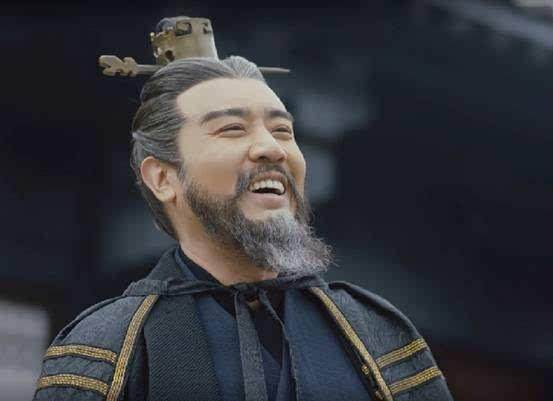
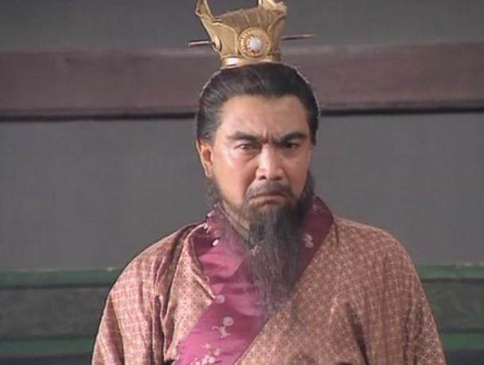
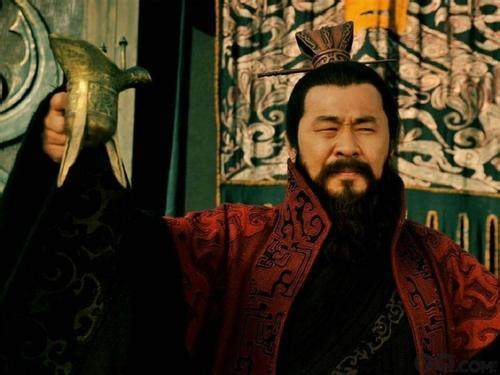
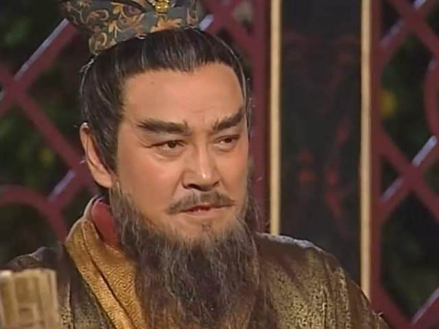
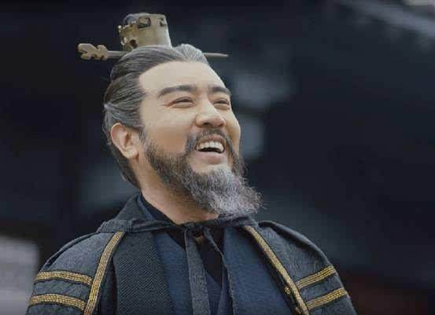
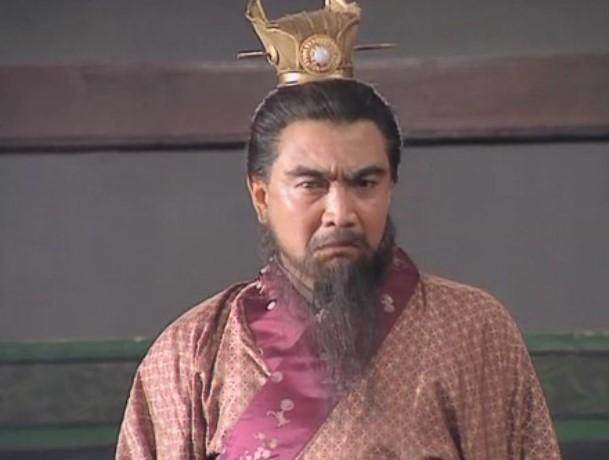
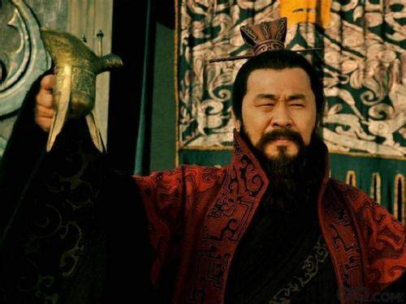
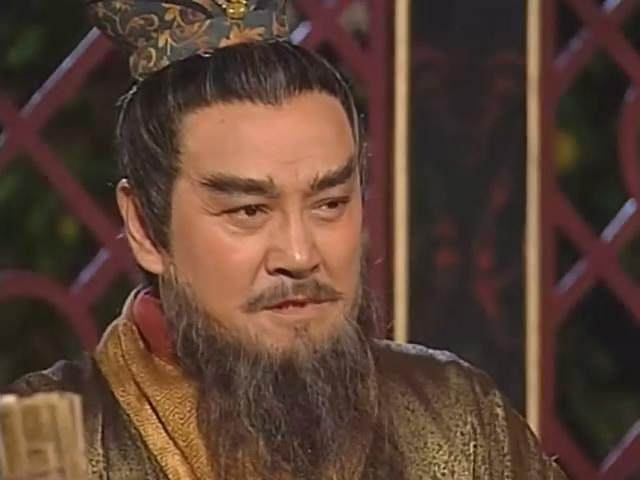

2016年上映的《大军师司马懿之军师联盟》中，于和伟扮演的曹操

1
1994年上映的央视版《三国演义》中，鲍国安扮演的曹操

2010年上映的《三国》中，陈建斌扮演的曹操

2002年上映的《洛神》中，刘丹扮演的曹操

影视形象
✪✪✪✪✪
2016年上映的《大军师司马懿之军师联盟》中，于和伟扮演的曹操

1
1994年上映的央视版《三国演义》中，鲍国安扮演的曹操

2010年上映的《三国》中，陈建斌扮演的曹操

2002年上映的《洛神》中，刘丹扮演的曹操
